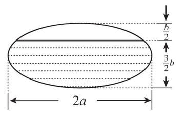

2010 年全国硕士研究生招生考试
数 学（二）
- 考生必须在答题纸上作答，在试题纸上作答无效。
- 答题前，考生务必将自己的准考证号、姓名填写在答题纸指定位置。
- 考试时间为 180 分钟，满分为 150 分。
一、选择题：1～8小题，每小题4分，共32分。下列每题给出的四个选项中，只有一个选项是符合题目要求的。
函数 $f \left(x\right) = \frac{x^{2} - x}{x^{2} - 1}\sqrt{1 + \frac{1}{x^{2}}}$ 的无穷间断点的个数为（ ）
设 $y_{1}, y_{2}$ 是一阶线性非齐次微分方程 $y^{\prime} + p \left(x\right)y = q \left(x\right)$ 的两个特解，若常数 $\lambda, \mu$ 使 $\lambda y_{1} + \mu y_{2}$ 是该方程的解，$\lambda y_{1} - \mu y_{2}$ 是该方程对应的齐次方程的解，则（ ）
曲线 $y = x^{2}$ 与曲线 $y = a \ln x \left(a \ne 0\right)$ 相切，则 $a =$（ ）
设 $m, n$ 是正整数，则反常积分 $\int_{0}^{1}\frac{\sqrt[m]{\ln^{2}\left(1 - x\right)}}{\sqrt[n]{x}} \mathrm{~d}x$ 的收敛性（ ）
设函数 $z = z \left(x, y\right)$，由方程 $F \left(\frac{y}{x}, \frac{z}{x}\right) = 0$ 确定，其中 $F$ 为可微函数，且 $F_{2}^{\prime} \ne 0$，则 $x\frac{\partial z}{\partial x} + y\frac{\partial z}{\partial y} =$（ ）
$\lim_{n \to \infty}\sum_{i = 1}^{n}\sum_{j = 1}^{n}\frac{n}{\left(n + i\right)\left(n^{2} + j^{2}\right)} =$（ ）
设向量组 I：$\boldsymbol{\alpha}_{1}, \boldsymbol{\alpha}_{2}, \cdots, \boldsymbol{\alpha}_{r}$ 可由向量组 II：$\boldsymbol{\beta}_{1}, \boldsymbol{\beta}_{2}, \cdots, \boldsymbol{\beta}_{s}$ 线性表示，下列命题正确的是（ ）
设 $\boldsymbol{A}$ 为 4 阶实对称矩阵，且 $\boldsymbol{A}^{2} + \boldsymbol{A} = \boldsymbol{O}$，若 $\boldsymbol{A}$ 的秩为 3，则 $\boldsymbol{A}$ 相似于（ ）
二、填空题：9～14小题，每小题4分，共24分。
3 阶常系数线性齐次微分方程 $y^{\prime\prime\prime} - 2y^{\prime\prime} + y^{\prime} - 2y = 0$ 的通解为 $y = \underline{\qquad\qquad}$.
曲线 $y = \frac{2x^{3}}{x^{2} + 1}$ 的渐近线方程为 $\underline{\qquad\qquad}$.
函数 $y = \ln \left(1 - 2x\right)$ 在 $x = 0$ 处的 $n$ 阶导数 $y^{\left(n\right)}\left(0\right) = \underline{\qquad\qquad}$.
当 $0 \le \theta \le \pi$ 时，对数螺线 $r = e^{\theta}$ 的弧长为 $\underline{\qquad\qquad}$.
已知一个长方形的长 $l$ 以 $2\mathrm{cm}/\mathrm{s}$ 的速率增加，宽 $w$ 以 $3\mathrm{cm}/\mathrm{s}$ 的速率增加，则当 $l = 12\mathrm{cm}, w = 5\mathrm{cm}$ 时，它的对角线增加的速率为 $\underline{\qquad\qquad}$.
设 $\boldsymbol{A}, \boldsymbol{B}$ 为 3 阶矩阵，且 $\left|\boldsymbol{A}\right| = 3, \left|\boldsymbol{B}\right| = 2, \left|\boldsymbol{A}^{-1} + \boldsymbol{B}\right| = 2$，则 $\left|\boldsymbol{A} + \boldsymbol{B}^{-1}\right| = \underline{\qquad\qquad}$.
三、解答题：15～23小题，共94分。解答应写出文字说明、证明过程或演算步骤。
（本题满分 10 分）求函数 $f \left(x\right) = \int_{1}^{x^{2}}\left(x^{2} - t\right)e^{-t^{2}} \mathrm{~d}t$ 的单调区间与极值.
（本题满分 10 分）（I）比较 $\int_{0}^{1}\left|\ln t\right|\left[\ln \left(1 + t\right)\right]^{n}\mathrm{~d}t$ 与 $\int_{0}^{1}t^{n}\left|\ln t\right|\mathrm{~d}t$，$\left(n = 1, 2, \cdots\right)$ 的大小，说明理由；
（II）记 $u_{n} = \int_{0}^{1}\left|\ln t\right|\left[\ln \left(1 + t\right)\right]^{n}\mathrm{~d}t$，$\left(n = 1, 2, \cdots\right)$，求极限 $\lim_{n \to \infty}u_{n}$.
（本题满分 11 分）设函数 $y = f \left(x\right)$ 由参数方程 $\begin{cases}x = 2t + t^{2}, \\ y = \psi \left(t\right),\end{cases} \left(t > -1\right)$ 所确定，其中 $\psi \left(t\right)$ 具有 2 阶导数，且 $\psi \left(1\right) = \frac{5}{2}, \psi^{\prime}\left(1\right) = 6$。已知 $\frac{\mathrm{d}^{2}y}{\mathrm{d}x^{2}} = \frac{3}{4\left(1 + t\right)}$，求函数 $\psi \left(t\right)$.
（本题满分 10 分）一个高为 $l$ 的柱体形贮油罐，底面是长轴为 $2a$、短轴为 $2b$ 的椭圆。现将贮油罐平放，当油罐中油面高度为 $\frac{3}{2}b$ 时，计算油的质量。（长度单位为 $\mathrm{m}$，质量单位为 $\mathrm{kg}$，油的密度为常数 $\rho \mathrm{kg}/\mathrm{m}^{3}$）

（本题满分 11 分）设函数 $u = f \left(x, y\right)$ 具有二阶连续偏导数，且满足等式 $4\frac{\partial^{2}u}{\partial x^{2}} + 12\frac{\partial^{2}u}{\partial x \partial y} + 5\frac{\partial^{2}u}{\partial y^{2}} = 0$，确定 $a, b$ 的值，使等式在变换 $\xi = x + ay, \eta = x + by$ 下化简为 $\frac{\partial^{2}u}{\partial \xi \partial \eta} = 0$.
（本题满分 10 分）计算二重积分 $I = \iint_{D}r^{2}\sin \theta \sqrt{1 - r^{2}\cos 2\theta}\mathrm{~d}r\mathrm{~d}\theta$，其中 $D = \left\{\left(r, \theta\right)\mid 0 \le r \le \sec \theta, 0 \le \theta \le \frac{\pi}{4}\right\}$.
（本题满分 10 分）设函数 $f \left(x\right)$ 在闭区间 $\left[0,1\right]$ 上连续，在开区间 $\left(0,1\right)$ 内可导，且 $f \left(0\right) = 0, f \left(1\right) = \frac{1}{3}$，证明：存在 $\xi \in \left(0,\frac{1}{2}\right), \eta \in \left(\frac{1}{2},1\right)$，使得 $f^{\prime}\left(\xi\right) + f^{\prime}\left(\eta\right) = \xi^{2} + \eta^{2}$.
（本题满分 11 分）设 $\boldsymbol{A} = \begin{pmatrix}\lambda & 1 & 1 \\ 0 & \lambda - 1 & 0 \\ 1 & 1 & \lambda\end{pmatrix}, \boldsymbol{b} = \begin{pmatrix}a \\ 1 \\ 1\end{pmatrix}$，已知线性方程组 $\boldsymbol{A}\boldsymbol{x} = \boldsymbol{b}$ 存在两个不同的解。
（I）求 $\lambda, a$；
（II）求方程组 $\boldsymbol{A}\boldsymbol{x} = \boldsymbol{b}$ 的通解.
（本题满分 11 分）设 $\boldsymbol{A} = \begin{pmatrix}0 & -1 & 4 \\ -1 & 3 & a \\ 4 & a & 0\end{pmatrix}$，正交矩阵 $\boldsymbol{Q}$ 使得 $\boldsymbol{Q}^{T}\boldsymbol{A}\boldsymbol{Q}$ 为对角矩阵，若 $\boldsymbol{Q}$ 的第 1 列为 $\frac{1}{\sqrt{6}}\left(1,2,1\right)^{T}$，求 $a, \boldsymbol{Q}$.